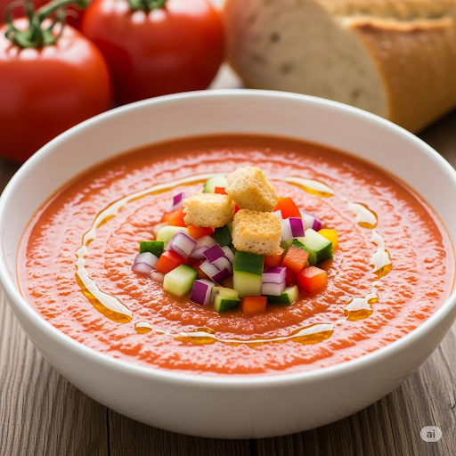

Gazpacho
Home

Description
El gazpacho es una sopa fría y refrescante, ideal para el verano. Aquí tienes una receta tradicional:
Ingredients
- 1 kg de tomates maduros
- 1 pimiento verde
- Medio pepino
- Media cebolla pequeña
- 1 diente de ajo
- 100 ml de aceite de oliva virgen extra
- 30 ml de vinagre de vino (o al gusto)
- Sal al gusto
- Agua fría (opcional, para ajustar la consistencia)
Steps
- Lava bien los tomates, el pimiento y el pepino. Pela el pepino y el ajo, y corta todas las verduras en trozos grandes.
- Coloca todas las verduras en un recipiente junto con el aceite de oliva, el vinagre y la sal.
- Tritura todo con una batidora de mano o una licuadora hasta obtener una mezcla homogénea y fina.
- Si prefieres una textura más suave, puedes pasar la mezcla por un colador o un "chino" para eliminar cualquier resto de piel o semillas.
- Añade un poco de agua fría si lo deseas más líquido.
- Refrigera el gazpacho durante al menos una hora antes de servir para que esté bien frío.
- Sirve el gazpacho acompañado de trozos pequeños de las mismas verduras (pepino, pimiento, cebolla) como guarnición.